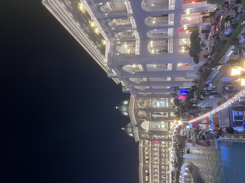
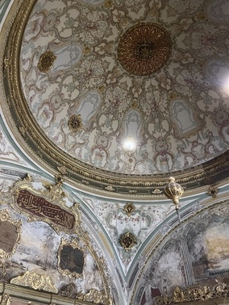

My Travel Experiences
In the age of technology advancement, my travel experiences have definitely encouraged me to follow the cybersecurity path. Throughout my life, I have travelled to many places including Dubai, Singapore, Fiji, Türkiye, Qatar, Bali, Maldives, Saudi Arabia and parts of Australia.
I also travelled to Syria, my home country, but I hardly remember it because I was around four years old at the time. Personally, I feel connected to my Arab background even if distance can be a problem.

Doha, Qatar
This photo was taken a few months ago from Qatar during our second visit there. This was the evening before my older cousins' wedding. This gorgeous picture taken by me is of a Qatari shopping mall, where my immediate family, relatives and I met up for a night out before the wedding.
I'm looking forward to going back to Qatar for the third time, when I will be working in cybersecurity.

Istanbul, Türkiye
I took this picture also a few months ago. This is a photo of the interior design of the Topkapi palace in Türkiye. It's absolutely stunning and makes you feel tiny as the ceilings of the palace rooms are sky-high.
The end of year travel to Qatar and Türkiye made me reflect on my future ambitions, as for the last few years I was adamant on cybersecurity, and this trip made me feel certain in my decision.